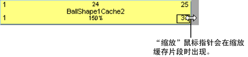
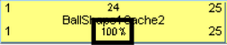
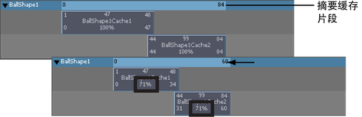

可以缩放几何缓存片段以加快或减慢对象的缓存变形。
缩小（小于原始缓存片段长度的 100%）缓存片段会压缩缓存片段中的变形，以便生成的变形看起来较快或加速。放大（大于原始缓存片段长度的 100%）缓存片段会拉伸缓存片段的变形，以便生成的变形看起来较慢。
缩放几何缓存片段
- 在场景视图中，选择要缩放其几何缓存片段的对象。
- 在“Trax 编辑器”(Trax Editor)中，选择要缩放的几何缓存片段。
- 执行下列操作之一：
- 拖动位于底角的片段热点以缩放缓存片段。

- 双击缓存片段上的比例值，键入一个新比例值，然后按 Enter 键。

- 在“通道盒”(Channel Box)中，设定缓存片段的“比例”通道值。
- 拖动位于底角的片段热点以缩放缓存片段。
同时缩放多个几何缓存片段
- 在场景视图中，选择要缩放其几何缓存片段的对象。
- 在“Trax 编辑器”(Trax Editor)中，按住 Shift 键选择要缩放的几何缓存片段。
随即显示缓存片段操纵器。

- 将缩放控制柄拖动到左侧或右侧以同时缩放所有选定的缓存片段。
缩放对象的所有几何缓存片段
- 在场景视图中，选择要缩放其几何缓存片段的对象。
- 在“Trax 编辑器”(Trax Editor)中，拖动摘要缓存片段的左侧或右侧以缩放选定对象的所有几何缓存片段。
